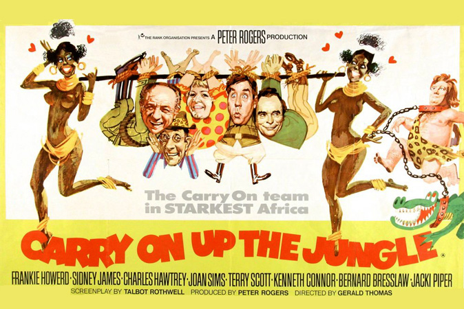
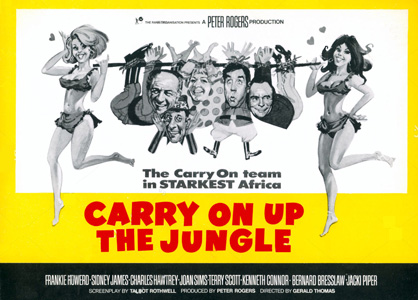
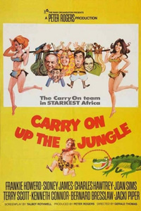

Peter Rogers
Chris Konyils (uncredited)
Camp ornithologist Professor Inigo Tinkle (Frankie Howerd) tells a less-than-enraptured audience about his most recent ornithological expedition to the darkest, most barren regions of the African wilds in search for the legendary Oozlum bird, which is said to fly in ever decreasing circles until it disappears up its own rear end. Financing the expedition is Lady Evelyn Bagley (Joan Sims) and the team are led by the fearless (and lecherous) Bill Boosey (Sid James) and his slow-witted African guide Upsidasi (Bernard Bresslaw). Also on the expedition is Tinkle's idiotic assistant, Claude Chumley (Kenneth Connor) and June (Jacki Piper), Lady Bagley's beautiful but unappreciated maidservant. The journey does not get off to a good start, with a mad gorilla terrorising the campsite and the travellers' realising they have ventured into the territory of the bloodthirsty "Noshas", a tribe of feared cannibals.
On the first night of the expedition, at dinner Lady Bagley reveals that she has embarked on the journey to find her long-lost husband and baby son who vanished twenty years ago on their delayed honeymoon, whilst out on a walk. Her husband is believed to have been eaten by a crocodile, but she hopes to find her baby son, Cecil's, nappy pin as something to remember him by. What the group do not know is that watching them from the bushes is Ug (Terry Scott), a bungling yet compassionate Tarzan-like jungle dweller that wears a loincloth and sandals. Ug has never before seen any other white people, especially a woman. The next day, June stumbles across a beautiful oasis where she saves Ug from drowning and the two begin to fall in love.
That night, Ug wanders into camp and encounters Lady Bagley in her tent (mistaking it for June's tent) and she is astonished to see that Ug is wearing Cecil's nappy pin, and that Ug is in fact her lost son Cecil. But before they can be reunited, Ug flees in fear and Lady Bagley faints with shock. The next day, the travellers are kidnapped by the Noshas, but manage to bribe their way out of being cannibalised by giving the tribal witch doctor Tinkle's pocket watch. Tinkle however delays and promises the witch doctor that their gods will bestow a sign of thanks upon them. Intending rescue, Ug accidentally catapults himself into the Nosha camp and starts a fire. In the chaos, Ug, June and Upsidasi manage to escape but the enraged Noshas apprehend the other travellers and prepare to kill them.
As they wait to be put to death, they are suddenly rescued by the all-female Lubby-Dubby tribe led by the stunning Leda (Valerie Leon) from the Lost World of Aphrodisia. They are taken to Aphrodisia and meet the king of the tribe Tonka who turns out to be Lady Bagley's missing husband Walter Bagley (Charles Hawtrey) who was taken by the Noshas years ago, but saved and brought to Aphrodisia by the tribal women. Evelyn Bagley is infuriated that he never bothered to search for their missing son and laments she has seen him but has once again lost him. June and Ug are revealed to be living happily together and June is teaching Ug to speak English.
Bill Boosey, Prof. Tinkle and Chumley enjoy the attention given to them by the tribal women, and Tinkle and Chumley are stunned to find that their elusive Oozlum Bird is in fact a sacred animal to the Lubby-Dubby females. It transpires that the Lubby-Dubbies need the menfolk to save themselves from extinction, as no males have been born in Aphrodisia for over a century. The men think their dreams have come true ... until Leda makes it clear that the Lubby-Dubby women have no intention of letting them go. Tonka implies that the last man who tried to escape Aphrodisia was murdered by the tribe.
Three months pass and the men now hate the pressures forced on them by Leda, who in turn is outraged that none of the men's "mates" have gotten pregnant. She overthrows Tonka and assumes his place, threatening harm to the men. However Upsidasi arrives disguised as a woman and says he has brought soldiers to save them. Ug and June also search for their friends and Ug summons a stampede of animals to create chaos and enable the men to get away. During the confusion, Tinkle snatches the Oozlum Bird and the team escape along with Tonka. After the chaos, Leda and her army chase after the men, but are more interested in the trampled soldiers. She says to let the others go not needing them now that they have "some real men." Lady Bagley is reunited with her beloved son and the group return to England. Tinkle unveils his Oozlum Bird to his audience ... only to find it vanished up inside itself. June and Ug are happily married with a baby, and live in a treehouse in the suburbs whilst Ug goes to work in a bowler hat, suit, and no shoes.
Filming dates: 13 October - 21 November 1969.
Interiors: Pinewood Studios.
Exteriors: (1) Pinewood Studios, (2) Maidenhead Library – The location for Professor Tinkle's lecture. The building is now demolished but the original site is directly opposite Maidenhead Town Hall, as featured in Carry On Doctor, Carry On Again Doctor and Carry On Behind, (3) Clarence Crescent, Windsor - location of the very final scene of the movie.
Carry On Up the Jungle is, in part, a parody of Hammer Film Productions' Cavegirl series: One Million Years B.C. (1966), Slave Girls (1967) and more particularly Edgar Rice Burroughs' Tarzan series of books and films.
Bernard Bresslaw learned all his native orders in Swahili; however, the "African" extras were of Caribbean origin and did not understand. But Sid James, who was born in South Africa, recognised it and congratulated him.
The storyline is partly referenced in the Christmas Special Carry On, when all the characters sit down for Christmas Dinner and eat the Oozlum bird instead of a traditional Turkey.
Charles Hawtrey (born November 1914) as Walter Bagley plays the father of Ugg/Cecil Bagley Terry Scott (born May 1927) despite being merely twelve and a half years his senior. Joan Sims (born May 1930) as Lady Bagley plays his mother though she is three years his junior.
Nina Baden-Semper, who plays a Nosha went on to star as Barbie Reynolds in the much-maligned 1970's sitcom Love Thy Neighbour.
Major recasting occurred prior to shooting. Jim Dale was unhappy about his offered role of Jungle Boy, mainly because the all the role consisted of was grunts and groans, so declined. Meanwhile Kenneth Williams was too busy with his BBC TV series The Kenneth Williams Show and was unable to commit to the role of Professor Tinkle.
Whilst the punning alternative title of 'The African Queens' was kept in the film, the other titles of 'Don't Shoot 'til you See the Whites of their Thighs' and 'The Lust Continent' were shelved.
The Whippit Inn - "The main thing you'll notice on viewing this one is the fact that it looks cheap - really cheap. Obviously the Carry On's budget couldn't stretch to location filming in deepest Africa, so E Stage in Pinewood made do. Stock footage is utilised throughout the film for shots of wild animals and so forth. However, despite the obvious budget limitations (a rare example of the series really overstretching itself) there is much to enjoy with this romp around the jungle. Firstly there's the title track. Eric Rogers' title track is surely the most bonkers composition anyone ever wrote for the series. Even if the set doesn't fully convey the feeling of being in the jungle, the title score with tribal chants, jungle drums, animal noises and the obligatory 'Oompah, Oompah, stick it up your jumper' certainly will."

